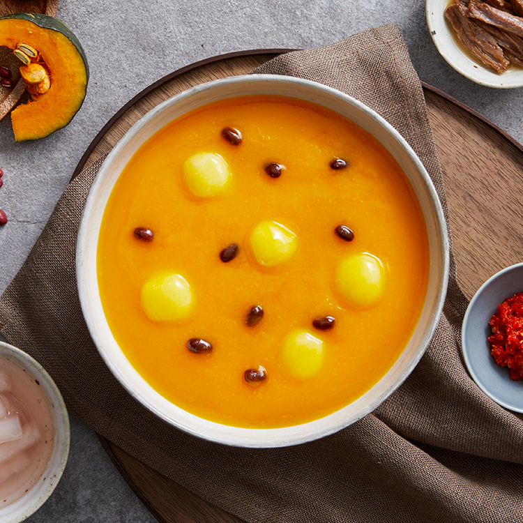

- 본죽 신메뉴 소개
- 내가 뽑은 최애 메뉴 소개
- 최근(2020)마케팅 전략
단호박은 제가 입맛이 없을 때나 간식이 생각날 때 즐겨먹는 음식이에요. 비타민과 식이섬유가 풍부해 건강에도 좋은 단호박으로 만든 '단호박죽'을 최애메뉴로 뽑았어요!
단호박죽(9,000원)

100% 단호박으로 진하게 끓여낸, 단호박죽
다른 첨가물 없이 100% 단호박으로 끓여 내어 더욱 진한 단호박 그대로의 맛. 부드럽고 달달하면서도 영양 가득한 한 그릇을 추천합니다.
동글동글 쫄깃쫄깃 새알심이 동동! 뜨끈한 죽과 호호 불어 함께 곁들이며 든든하고 즐거운 한 그릇을 만나보세요.